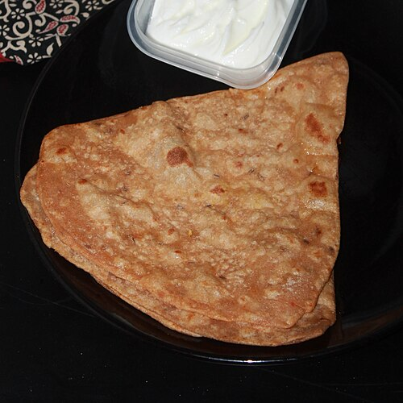
41. aloo-parathaFile:Triangle paratha (cropped).JPG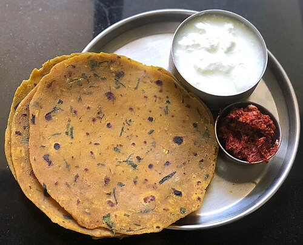
42. methi-parathaFile:Thepla main.jpg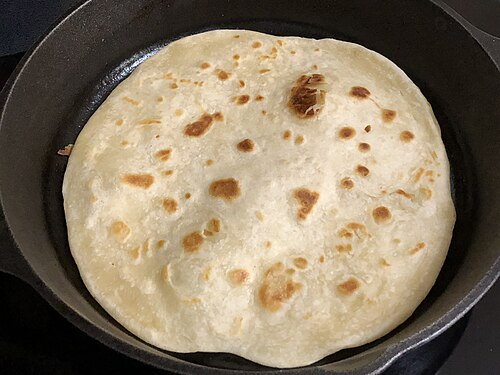
43. rotiFile:2020-05-08 19 34 28 Chapati being made in a pan in the Franklin Farm section of Oak Hill, Fairfax County, Virginia.jpg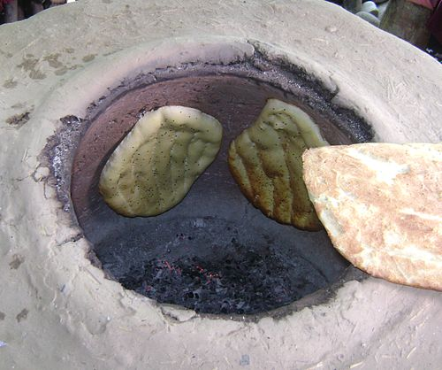
44. tandoori-rotiFile:Az Tandoor e-citizen.jpg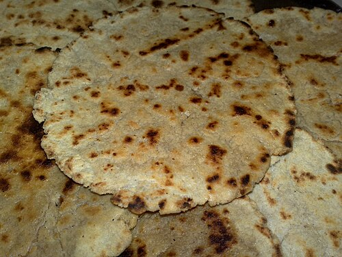
45. jowar-rotiFile:Bhakri 1.jpg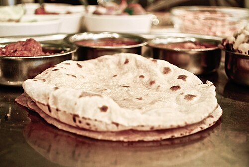
46. chapathiFile:2 Chapati warm and ready to be eaten.jpg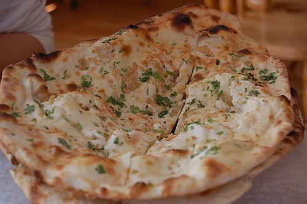
47. butter-naanFile:Annapurna Naan.jpg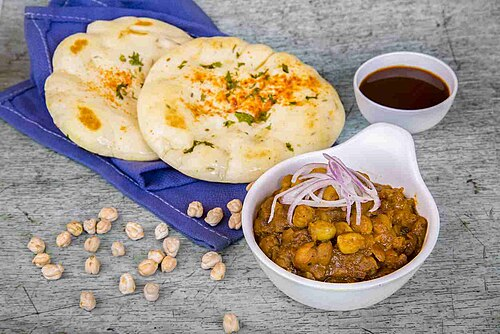
48. kulchaFile:Chole Kulcha Meal - Order Food Online in Mumbai (31013272937).jpg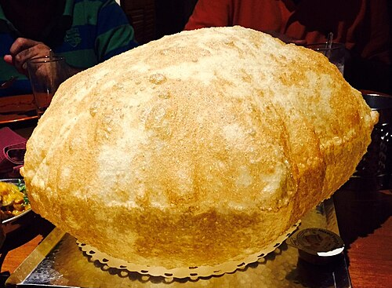
49. bhaturaFile:Bhatoora.jpg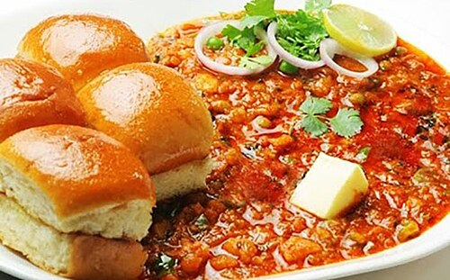
50. pav-bhajiFile:Bambayya Pav bhaji.jpg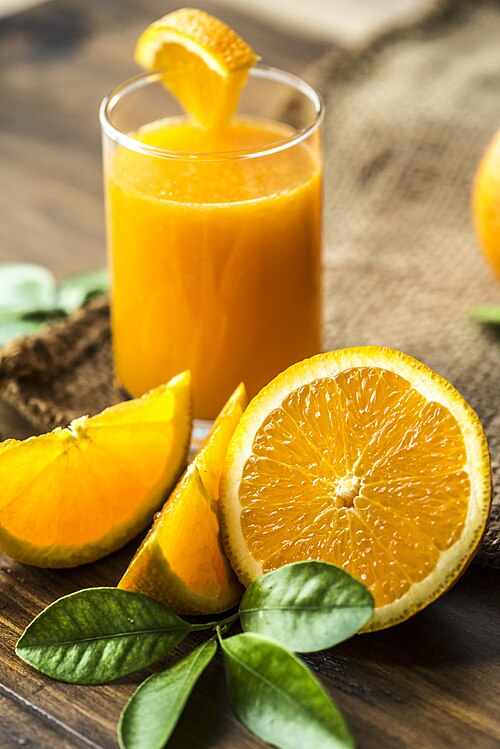
51. fruit-juiceFile:Orangejuice.jpg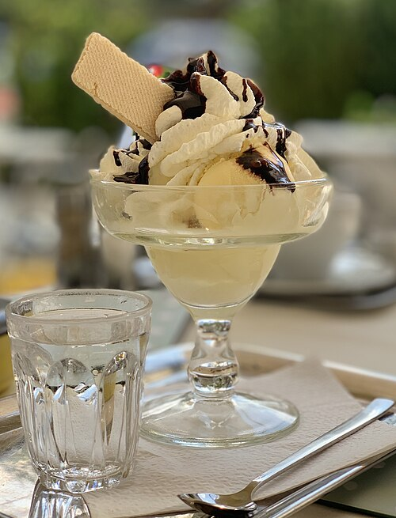
52. ice-creamFile:Ice cream with whipped cream, chocolate syrup, and a wafer (cropped).jpg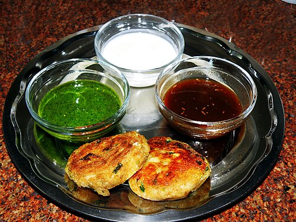
53. cutletFile:Aloo Tikki served with chutneys.jpg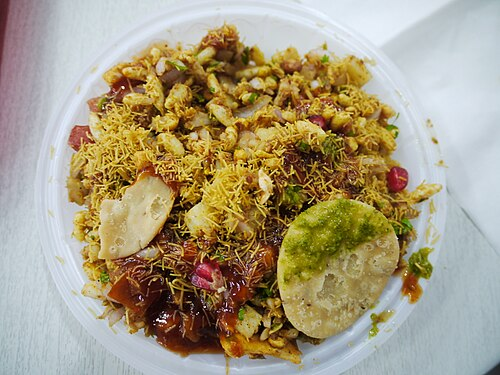
54. bhel-puriFile:Behael Puri (6105489342).jpg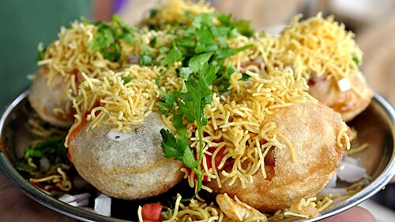
55. dahi-puriFile:Sev puri with sweet curd.JPG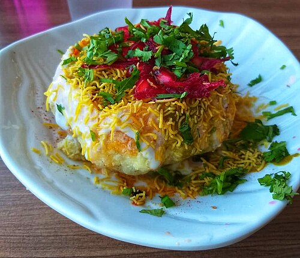
56. kachoriFile:Rajasthani Raj Kachori.jpg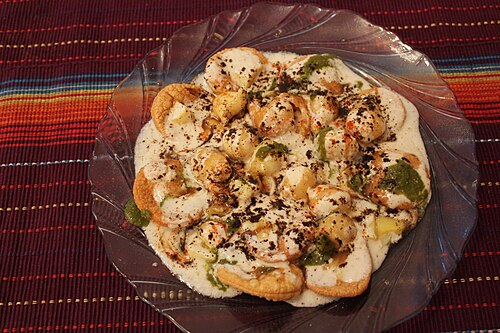
57. papdi-puriFile:Papri Pakori Chat.JPG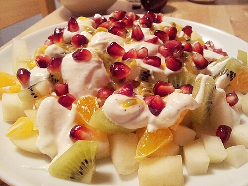
58. fresh-fruit-saladFile:Fruktsallad (Fruit salad).jpg 59. paneer-masalaFile:Shahi panner.jpg
59. paneer-masalaFile:Shahi panner.jpg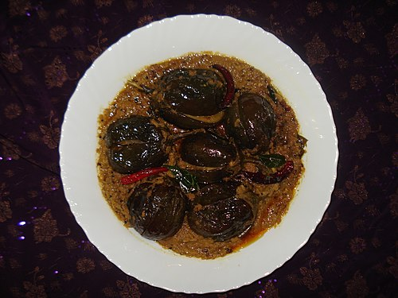
60. bagara-bainganFile:Baghare Baingan.JPG